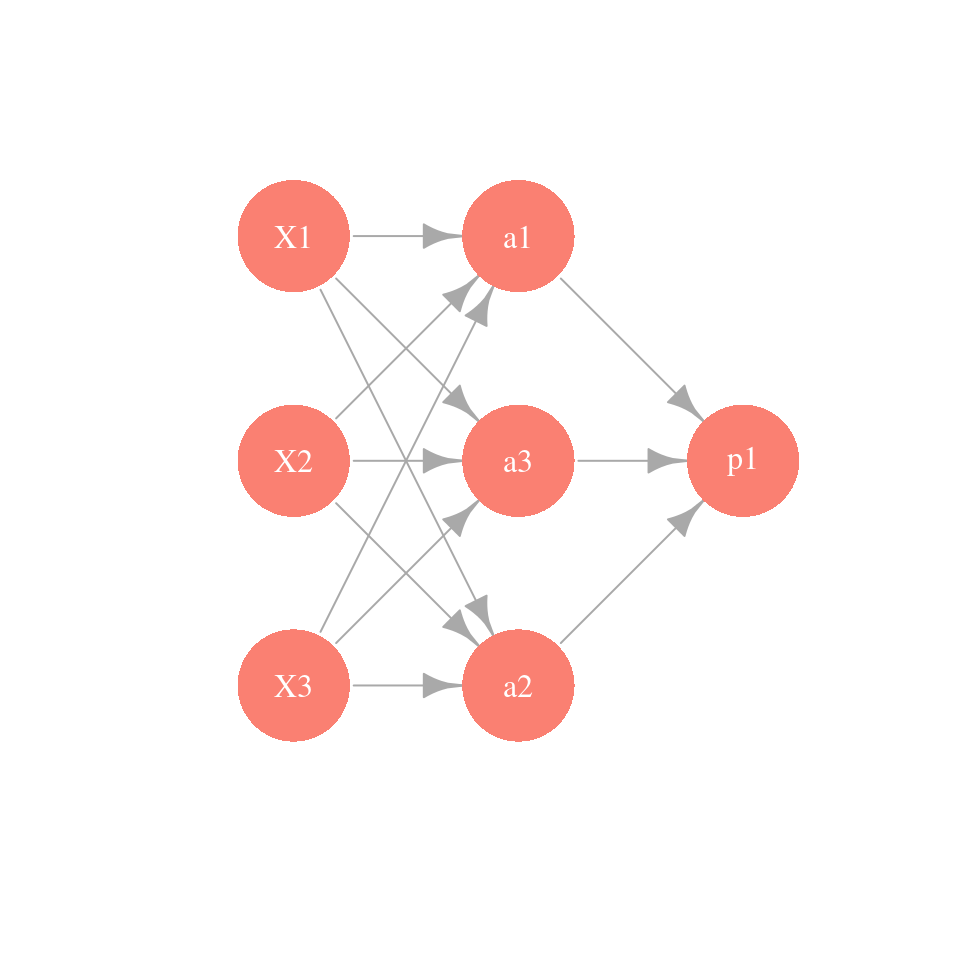
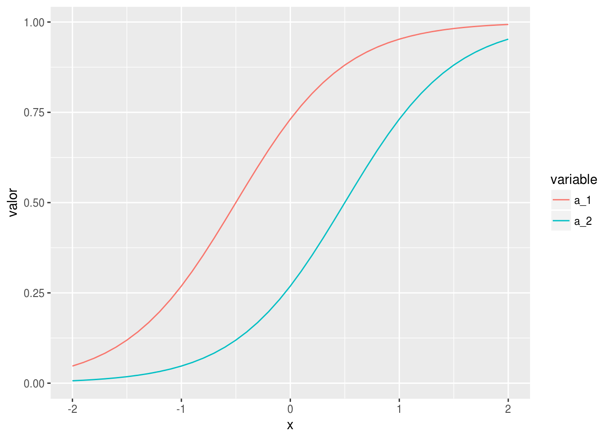
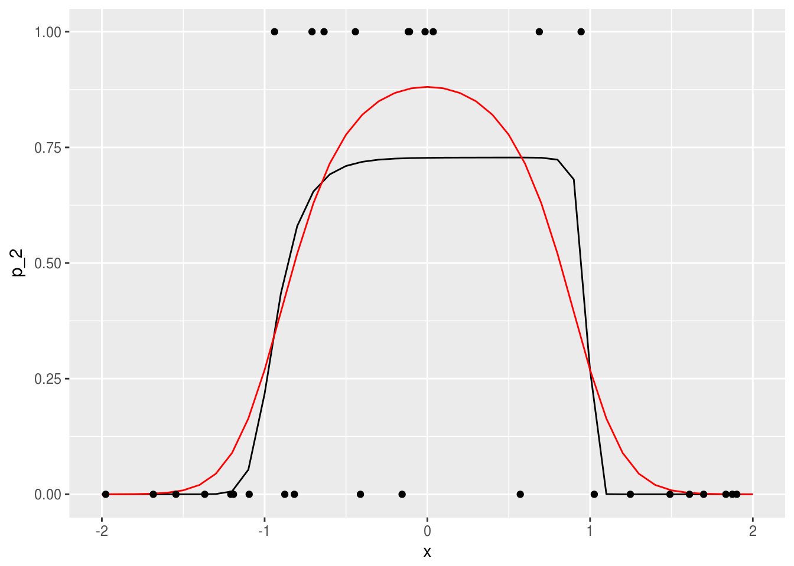
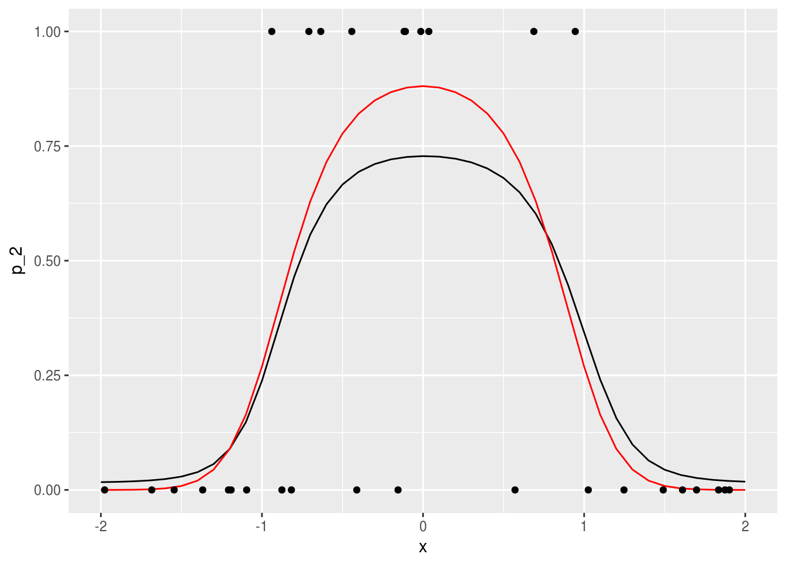
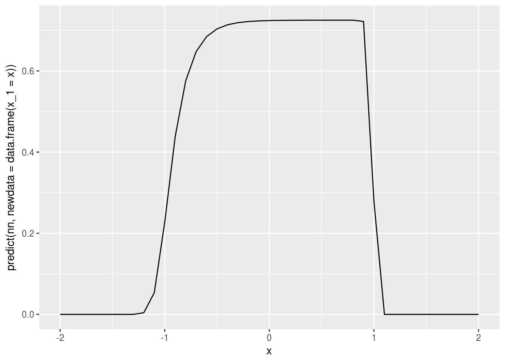
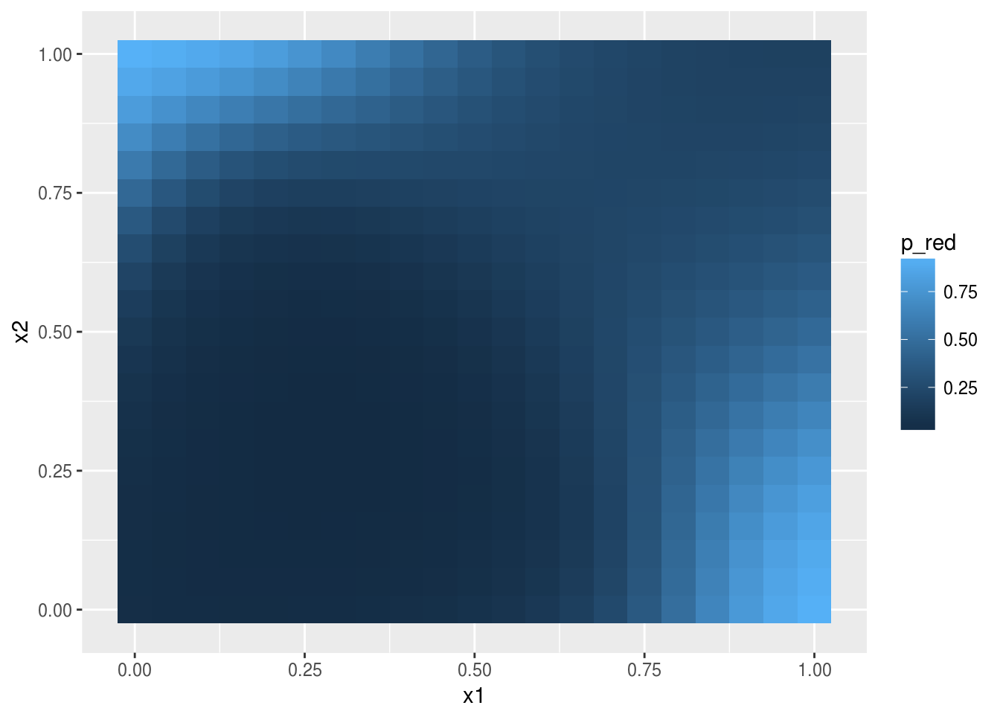
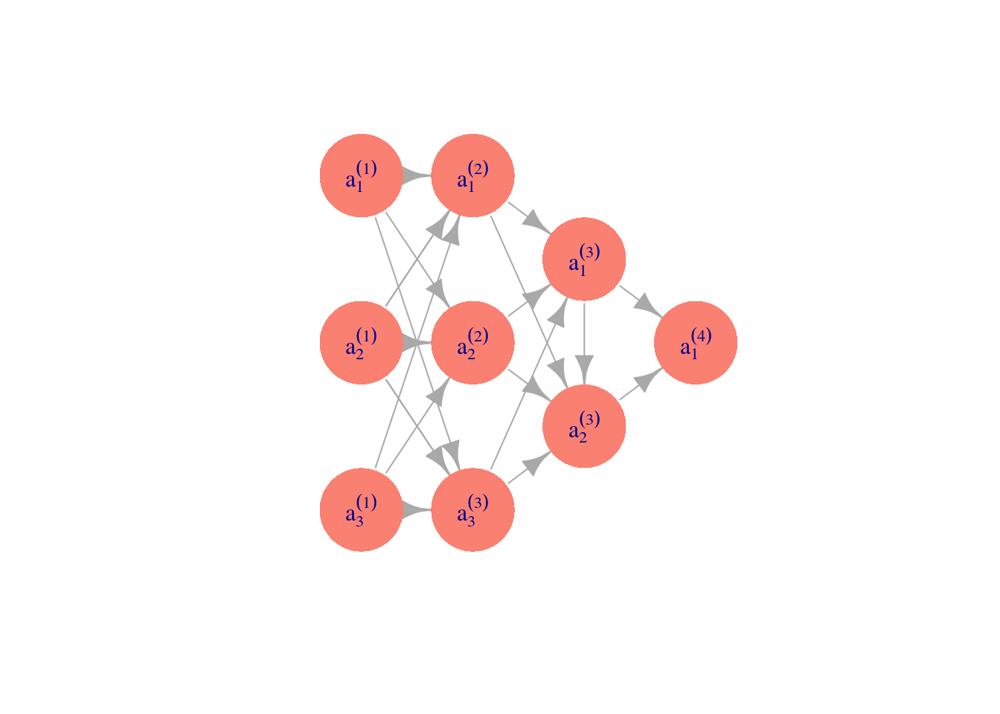
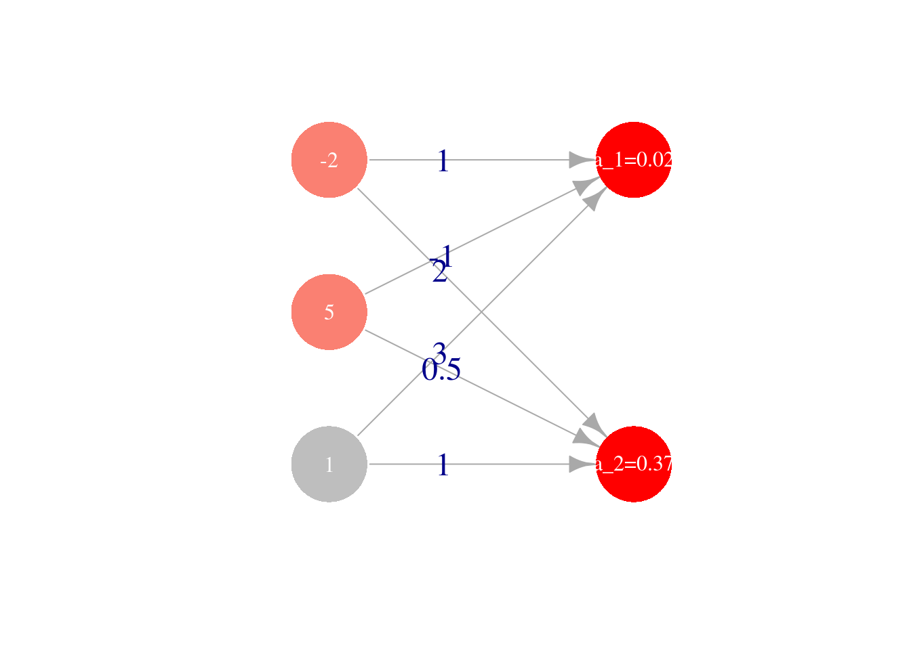

Clase 7 Redes neuronales (parte 1)
7.1 Introducción a redes neuronales
En la parte anterior, vimos cómo hacer más flexibles los métodos de regresión: la idea es construir entradas derivadas a partir de las variables originales, e incluirlas en el modelo de regresión. Este enfoque es bueno cuando tenemos relativamente pocas variables originales de entrada, y tenemos una idea de qué variables derivadas es buena idea incluir (por ejemplo, splines para una variable como edad, interacciones para variables importantes, etc). Sin embargo, si hay una gran cantidad de entradas, esta técnica puede ser prohibitiva en términos de cálculo y trabajo manual.
Por ejemplo, si tenemos unas 100 entradas numéricas, al crear todas las interacciones \(x_i x_j\) y los cuadrados \(x_i^2\) terminamos con unas 5150 variables. Para el problema de dígitos (256 entradas o pixeles) terminaríamos con unas 32 mil entradas adicionales. Aún cuando es posible regularizar, en estos casos suena más conveniente construir entradas derivadas a partir de los datos.
Para hacer esto, consideramos entradas \(X_1, . . . , X_p\), y supongamos que tenemos un problema de clasificación binaria, con \(G = 1\) o \(G = 0\). Aunque hay muchas maneras de construir entradas derivadas, una manera simple sería construir \(m\) nuevas entradas mediante:
\[a_k = h \left ( \theta_{k,0} + \sum_{j=1}^p \theta_{k,j}x_j \right)\]
para \(k=1,\ldots, m\), donde \(h\) es la función logística, y las \(\theta\) son parámetros que seleccionaremos más tarde.
Modelamos ahora la probabilidad de clase 1 con regresión logística -pero en lugar de usar las entradas originales X usamos las entradas derivadas \(a_1, . . . , a_m\): \[p_1(x) = h \left ( \beta_0 + \sum_{j=1}^m \beta_ja_j \right)\]
Podemos representar este esquema con una red dirigida (\(m=3\) variables derivadas):

Observaciones:
- ¿Por qué usar \(h\) para las entradas derivadas \(a_k\)? En primer lugar, nótese que si no transformamos con alguna función no lineal \(h\), el modelo final \(p_1\) para la probabilidad condicional es el mismo que el de regresión logística (combinaciones lineales de combinaciones lineales son combinaciones lineales). Sin embargo, al transformar con \(h\), las \(x_j\) contribuyen de manera no lineal a las entradas derivadas.
- Las variables \(a_k\) que se pueden obtener son similares (para una variable de entrada) a los I-splines que vimos en la parte anterijor.
- Es posible demostrar que si se crean suficientes entradas derivadas (\(m\) es suficientemente grande), entonces la función \(p_1(x)\) puede aproximar cualquier función continua. La función \(h\) (que se llama función de activación no es especial: funciones continuas con forma similar a la sigmoide (logística) pueden usarse también (por ejemplo, arcotangente, o lineal rectificada). La idea es que cualquier función se puede aproximar mediante superposición de funciones tipo sigmoide (ver por ejemplo Cybenko 1989, Approximation by Superpositions of a Sigmoidal Function).
¿Cómo construyen entradas las redes neuronales?
Comencemos por un ejemplo simple de clasificación binaria con una sola entrada \(x\). Supondremos que el modelo verdadero está dado por:
h <- function(x){
1/(1 + exp(-x)) # es lo mismo que exp(x)/(1 + exp(x))
}
x <- seq(-2, 2, 0.1)
p <- h(2 - 3 * x^2) #probabilidad condicional de clase 1 (vs. 0)
set.seed(2805721)
x_1 <- runif(30, -2, 2)
g_1 <- rbinom(30, 1, h(2 - 3 * x_1^2))
datos <- data.frame(x_1, g_1)
dat_p <- data.frame(x, p)
g <- qplot(x, p, geom='line')
g + geom_point(data = datos, aes(x = x_1, y = g_1), colour = 'red')
donde adicionalmente graficamos 30 datos simulados. Recordamos que queremos ajustar la curva roja, que da la probabilidad condicional de clase. Podríamos ajustar un modelo de regresión logística expandiendo el espacio de entradas agregando \(x^2\), y obtendríamos un ajuste razonable.
La idea aquí es que podemos crear entradas derivadas de forma automática. Suponamos entonces que pensamos crear dos entradas \(a_1\) y \(a_2\), funciones de \(x_1\), y luego predecir \(g.1\), la clase, en función de estas dos entradas. Por ejemplo, podríamos tomar:

donde hacemos una regresión logística para predecir \(G\) mediante \[p_1(a) = h(\beta_0 + \beta_1a_1+\beta_2 a_2),\] \(a_1\) y \(a_2\) están dadas por \[a_1(x)=h(\beta_{1,0} + \beta_{1,1} x_1),\] \[a_2(x)=h(\beta_{2,0} + \beta_{2,1} x_1).\]
Por ejemplo, podríamos tomar
a_1 <- h( 1 + 2*x) # 2(x+1/2)
a_2 <- h(-1 + 2*x) # 2(x-1/2) # una es una versión desplazada de otra.Las funciones \(a_1\) y \(a_2\) dependen de \(x\) de la siguiente forma:
dat_a <- data.frame(x = x, a_1 = a_1, a_2 = a_2)
dat_a_2 <- dat_a %>% gather(variable, valor, a_1:a_2)
ggplot(dat_a_2, aes(x=x, y=valor, colour=variable, group=variable)) + geom_line()
Si las escalamos y sumamos, obtenemos
dat_a <- data.frame(x=x, a_1=-4+12*a_1, a_2=-12*a_2, suma=-4+12*a_1-12*a_2)
dat_a_2 <- dat_a %>% gather(variable, valor, a_1:suma)
ggplot(dat_a_2, aes(x=x, y=valor, colour=variable, group=variable)) + geom_line()
y finalmente, aplicando \(h\):
dat_2 <- data.frame(x, p2=h(-4 + 12*a_1 - 12*a_2))
ggplot(dat_2, aes(x=x, y=p2)) + geom_line()+
geom_line(data=dat_p, aes(x=x,y=p), col='red') +ylim(c(0,1))+
geom_point(data = datos, aes(x=x_1,y=g_1)) que da un ajuste razonable. Este es un ejemplo de cómo la mezcla de dos funciones logísticas puede replicar esta función con forma de chipote.
que da un ajuste razonable. Este es un ejemplo de cómo la mezcla de dos funciones logísticas puede replicar esta función con forma de chipote.
¿Cómo ajustar los parámetros?
Para encontrar los mejores parámetros, minimizamos la devianza sobre los parámetros \(\beta_0,\beta_1,\beta_{1,0},\beta_{1,1}, \beta_{2,0},\beta_{2,1}\).
Veremos más adelante que conviene hacer esto usando descenso o en gradiente o descenso en gradiente estocástico, pero por el momento usamos la función optim de R para minimizar la devianza. En primer lugar, creamos una función que para todas las entradas calcula los valores de salida. En esta función hacemos feed-forward de las entradas a través de la red para calcular la salida
## esta función calcula los valores de cada nodo en toda la red,
## para cada entrada
feed_fow <- function(beta, x){
a_1 <- h(beta[1] + beta[2]*x) # calcula variable 1 de capa oculta
a_2 <- h(beta[3] + beta[4]*x) # calcula variable 2 de capa oculta
p <- h(beta[5]+beta[6]*a_1 + beta[7]*a_2) # calcula capa de salida
p
}Nótese que simplemente seguimos el diagrama mostrado arriba para hacer los cálculos, combinando linealmente las entradas en cada capa.
Ahora definimos una función para calcular la devianza. Conviene crear una función que crea funciones, para obtener una función que sólo se evalúa en los parámetros para cada conjunto de datos de entrenamiento fijos:
devianza_fun <- function(x, y){
# esta función es una fábrica de funciones
devianza <- function(beta){
p <- feed_fow(beta, x)
- 2 * mean(y*log(p) + (1-y)*log(1-p))
}
devianza
}Por ejemplo:
dev <- devianza_fun(x_1, g_1) # crea función dev
## ahora dev toma solamente los 7 parámetros beta:
dev(c(0,0,0,0,0,0,0))## [1] 1.386294Finalmente, optimizamos la devianza. Para esto usaremos la función optim de R:
set.seed(5)
salida <- optim(rnorm(7), dev, method='BFGS') # inicializar al azar punto inicial
salida## $par
## [1] -24.8192568 23.0201169 -8.4364869 -6.7633494 0.9849461 -14.0157655
## [7] -14.3394673
##
## $value
## [1] 0.654347
##
## $counts
## function gradient
## 103 100
##
## $convergence
## [1] 1
##
## $message
## NULLbeta <- salida$parY ahora podemos graficar con el vector \(\beta\) encontrado:
## hacer feed forward con beta encontrados
p_2 <- feed_fow(beta, x)
dat_2 <- data.frame(x, p_2 = p_2)
ggplot(dat_2, aes(x = x, y = p_2)) + geom_line()+
geom_line(data = dat_p, aes(x = x, y = p), col='red') +ylim(c(0,1))+
geom_point(data = datos, aes(x = x_1, y = g_1)) Los coeficientes estimados, que en este caso muchas veces se llaman pesos, son:
beta## [1] -24.8192568 23.0201169 -8.4364869 -6.7633494 0.9849461 -14.0157655
## [7] -14.3394673que parecen ser muy grandes. Igualmente, de la figura vemos que el ajuste no parece ser muy estable (esto se puede confirmar corriendo con distintos conjuntos de entrenamiento). Podemos entonces regularizar ligeramente la devianza para resolver este problema. En primer lugar, definimos la devianza regularizada (ridge):
devianza_reg <- function(x, y, lambda){
# esta función es una fábrica de funciones
devianza <- function(beta){
p <- feed_fow(beta, x)
# en esta regularizacion quitamos sesgos, pero puede hacerse también con sesgos.
- 2 * mean(y*log(p) + (1-y)*log(1-p)) + lambda*sum(beta[-c(1,3,5)]^2)
}
devianza
}dev_r <- devianza_reg(x_1, g_1, 0.001) # crea función dev
set.seed(5)
salida <- optim(rnorm(7), dev_r, method='BFGS') # inicializar al azar punto inicial
salida## $par
## [1] -4.826652 4.107146 -4.845864 -4.561488 1.067216 -5.236453 -5.195981
##
## $value
## [1] 0.8322745
##
## $counts
## function gradient
## 102 100
##
## $convergence
## [1] 1
##
## $message
## NULLbeta <- salida$par
dev(beta)## [1] 0.74018p_2 <- feed_fow(beta, x)
dat_2 <- data.frame(x, p_2 = p_2)
ggplot(dat_2, aes(x = x, y = p_2)) + geom_line()+
geom_line(data = dat_p, aes(x = x, y = p), col='red') +ylim(c(0,1))+
geom_point(data = datos, aes(x = x_1, y = g_1))
y obtenemos un ajuste mucho más estable. Podemos también usar la función nnet del paquete nnet. Ojo: en nnet, el error es la devianza no está normalizada por número de casos y dividida entre dos:
library(nnet)
set.seed(12)
nn <- nnet(g_1 ~ x_1, data=datos, size = 2, decay=0.0, entropy = T)## # weights: 7
## initial value 19.318858
## iter 10 value 11.967705
## iter 20 value 10.251964
## iter 30 value 9.647707
## iter 40 value 9.573030
## iter 50 value 9.569389
## iter 60 value 9.555125
## iter 70 value 9.546210
## iter 80 value 9.544512
## iter 90 value 9.539825
## iter 100 value 9.535977
## final value 9.535977
## stopped after 100 iterationsnn$wts## [1] -51.274012 48.789640 8.764849 6.219901 -29.155181 -24.998108
## [7] 30.125349nn$value## [1] 9.5359772*nn$value/30## [1] 0.6357318dev(nn$wts) ## [1] 0.6357318qplot(x, predict(nn, newdata=data.frame(x_1 = x)), geom='line')
Ejercicio
Un ejemplo más complejo. Utiliza los siguientes datos, y agrega si es necesario variables derivadas \(a_3,a_4\) en la capa oculta.
h <- function(x){
exp(x)/(1+exp(x))
}
x <- seq(-2,2,0.05)
p <- h(3 + x- 3*x^2 + 3*cos(4*x))
set.seed(280572)
x.2 <- runif(300, -2, 2)
g.2 <- rbinom(300, 1, h(3 + x.2- 3*x.2^2 + 3*cos(4*x.2)))
datos <- data.frame(x.2,g.2)
dat.p <- data.frame(x,p)
g <- qplot(x,p, geom='line', col='red')
g + geom_jitter(data = datos, aes(x=x.2,y=g.2), col ='black',
position =position_jitter(height=0.05), alpha=0.4)
7.2 Interacciones en redes neuronales
Es posible capturar interacciones con redes neuronales. Consideremos el siguiente ejemplo simple:
p <- function(x1, x2){
h(-8 + 10*x1 + 10*x2 - 15*x1*x2)
}
dat <- expand.grid(x1 = seq(0,1,0.05), x2 = seq(0, 1, 0.05))
dat <- dat %>% mutate(p = p(x1, x2))
ggplot(dat, aes(x=x1, y=x2)) + geom_tile(aes(fill=p))
Esta función puede entenderse como un o exclusivo: la probabilidad es alta sólo cuando x1 y x2 tienen valores opuestos (x1 grande pero x2 chica y viceversa). No es posible modelar esta función mediante el modelo logístico (sin interacciones).
Sin embargo, podemos incluir la interacción en el modelo logístico o intentar usar una red neuronal. Primero simulamos unos datos y probamos el modelo logístico con y sin interacciones:
set.seed(12)
n <- 500
dat_ent <- data_frame(x1=runif(n,0,1), x2 = runif(n, 0, 1)) %>%
mutate(p = p(x1, x2)) %>%
mutate(y = rbinom(n, 1, p))
mod_1 <- glm(y ~ x1 + x2, data = dat_ent, family = 'binomial')
mod_1##
## Call: glm(formula = y ~ x1 + x2, family = "binomial", data = dat_ent)
##
## Coefficients:
## (Intercept) x1 x2
## -2.8070 1.9648 0.9625
##
## Degrees of Freedom: 499 Total (i.e. Null); 497 Residual
## Null Deviance: 529.4
## Residual Deviance: 499.7 AIC: 505.7table(predict(mod_1)> 0.5, dat_ent$y)##
## 0 1
## FALSE 389 111mod_2 <- glm(y ~ x1 + x2 + x1:x2, data = dat_ent, family = 'binomial')
mod_2##
## Call: glm(formula = y ~ x1 + x2 + x1:x2, family = "binomial", data = dat_ent)
##
## Coefficients:
## (Intercept) x1 x2 x1:x2
## -9.233 11.637 11.054 -16.168
##
## Degrees of Freedom: 499 Total (i.e. Null); 496 Residual
## Null Deviance: 529.4
## Residual Deviance: 410.2 AIC: 418.2table(predict(mod_2)> 0.5, dat_ent$y)##
## 0 1
## FALSE 382 82
## TRUE 7 29Observese la gran diferencia de devianza entre los dos modelos (en este caso, el sobreajuste no es un problema).
Ahora consideramos qué red neuronal puede ser apropiada
set.seed(1155)
nn <- nnet(y ~ x1 + x2, data=dat_ent, size = 3, decay=0.001,
entropy = T, maxit=500,
Wts = c(1,-1,1,1, 1, -1,0,0,0,0,0,0,0)) #pesos iniciales## # weights: 13
## initial value 346.579590
## iter 10 value 263.544976
## iter 20 value 239.050578
## iter 30 value 230.411092
## iter 40 value 214.783457
## iter 50 value 203.001608
## iter 60 value 201.799499
## iter 70 value 201.677320
## iter 80 value 201.626436
## iter 90 value 201.615071
## final value 201.613783
## converged#primera capa
matrix(round(nn$wts[1:9], 1), 3,3, byrow=T)## [,1] [,2] [,3]
## [1,] 6.7 -7.8 -6.0
## [2,] -1.7 1.7 -2.9
## [3,] -1.9 -4.6 2.4#segunda capa
round(nn$wts[10:13], 1)## [1] -2.3 -4.2 11.7 12.3#2*nn$valueEll cálculo de esta red es:
feed_fow <- function(beta, x){
a_1 <- h(beta[1] + beta[2]*x[1] + beta[3]*x[2])
a_2 <- h(beta[4] + beta[5]*x[1] + beta[6]*x[2])
a_3 <- h(beta[7] + beta[8]*x[1] + beta[9]*x[2])
p <- h(beta[10]+beta[11]*a_1 + beta[12]*a_2 + beta[13]*a_3) # calcula capa de salida
p
}Y vemos que esta red captura la interacción:
feed_fow(nn$wts, c(0,0))## [1] 0.04118065feed_fow(nn$wts, c(0,1))## [1] 0.9276181feed_fow(nn$wts, c(1,0))## [1] 0.9208547# feed_fow(nn$wts, c(1,1))dat <- dat %>% rowwise %>% mutate(p_red = feed_fow(nn$wts, c(x1, x2)))
ggplot(dat, aes(x=x1, y=x2)) + geom_tile(aes(fill=p_red))
7.3 Redes neuronales completamente conexas
Ahora generalizamos lo que vimos arriba para definir la arquitectura básica de redes neuronales.
De modo que de la capa \(2\) a la capa \(3\), tenemos:
\[a_1^3 = h(\theta_{1,0}^{(3)} + \theta_{1,1}^{(3)} a_1^{(2)}+ \theta_{1,2}^{(3)}a_2^{(2)}+ \theta_{1,3}^{(3)} a_3^{(2)})\] \[a_2^3 = h(\theta_{2,0}^{(3)} + \theta_{2,1}^{(3)} a_1^{(2)}+ \theta_{2,2}^{(3)}a_2^{(2)}+ \theta_{2,3}^{(3)} a_3^{(2)})\]
como se ilustra en la siguiente gráfica:

Para visualizar las ordenadas (que también se llaman sesgos en este contexto), ponemos \(a_0^2=1\). 
7.4 Feed forward
Para calcular los valores de salida de una red a partir de pesos y datos de entrada, usamos el algoritmo feed-forward, calculando capa por capa.
Cálculo en redes: Feed-forward
Para la primera capa, escribimos las variables de entrada: \[a^{(1)}_j = x_j, j=1\ldots,n_1\] Para la primera capa oculta, o la segunda capa \[a^{(2)}_j = h\left( \theta_{j,0}^{(2)}+ \sum_{k=1}^{n_1} \theta_{j,k}^{(2)} a^{(1)}_k \right), j=1\ldots,n_2\] para la \(l\)-ésima capa: \[a^{(l)}_j = h\left( \theta_{j,0}^{(l)}+ \sum_{k=1}^{n_{l-1}} \theta_{j,k}^{(l)} a^{(l-1)}_k \right), j=1\ldots,n_{l}\] y así sucesivamente. Para la capa final o capa de salida (para problema binario), suponiendo que tenemos \(L\) capas (\(L-2\) capas ocultas): \[p_1 = h\left( \theta_{1,0}^{(L)}+ \sum_{k=1}^{n_{L-1}} \theta_{1,k}^{(L)} a^{(L-1)}_k \right).\]Nótese que entonces:
Cada capa se caracteriza por el conjunto de parámetros \(\Theta^{(l)}\), que es una matriz de \(n_l\times n_{l-1}\). La red completa entonces se caracteriza por:
- La estructura elegida (número de capas ocultas y número de nodos en cada capa oculta).
- Las matrices de pesos en cada capa \(\Theta^{(1)},\Theta^{(2)},\ldots, \Theta^{(L)}\)
Adicionalmente, escribimos en forma vectorial: \[a^{(l)} = (a^{(l)}_1, a^{(l)}_2, \ldots, a^{(l)}_{n_l})^t\]
Para calcular la salidas, igual que hicimos, antes, propagaremos hacia adelante los valores de las variables de entrada usando los pesos. Agregando entradas adicionales en cada capa \(a_0^{l}\), \(l=1,2,\ldots, L-1\), donde \(a_0^{l}=1\), y agregando a \(\Theta^{(l)}\) una columna con las ordenadas al origen (o sesgos) podemos escribir:
Feed-forward(matricial)
- Capa 2 \[ a^{(2)} = h(\Theta^{(1)}a^{(1)})\]
- Capa \(l\) (oculta) \[ a^{(l)} = h(\Theta^{(l)}a^{(l-1)})\]
- Capa de salida: \[a^{(L)}= p = h(\Theta^{(L)}a^{(L-1)})\]
Podemos hacer una función simple para hacer feed-foward de una capa a la siguiente:
feed_forward <- function(a, Theta){
# a_{l-1} da los valores de la primera capa, la función debe regresar
# los valores de la siguiente capa a_l. Theta da los pesos
h(Theta %*% a)
}Por ejemplo, consideremos propagar bajo la siguiente situación: 
La matriz de parámetros es
Theta = t(matrix(c(3,1,-1,1,0.5,2), byrow=F, ncol=2))
Theta## [,1] [,2] [,3]
## [1,] 3 1.0 -1
## [2,] 1 0.5 2Ahora hacemos feed forward:
feed_forward(c(1,-2,5), Theta = Theta)## [,1]
## [1,] 0.01798621
## [2,] 0.99995460
7.5 Ajuste de parámetros (introducción)
Consideramos la versión con regularización ridge (también llamada L2) de la devianza de entrenamiento como nuestro función objetivo:
Veremos el proceso de ajuste, selección de arquitectura, etc. más adelante. Por el momento hacemos unas observaciones acerca de este problema de minimización:
Hay varios algoritmos para minimizar esta devianza, algunos avanzados incluyendo información de segundo orden (como Newton), pero actualmente la técnica más popular, para redes grandes, es descenso en gradiente. Más específicamente, una variación, que es descenso estocástico.
Para redes neuronales, el gradiente se calcula con un algoritmo que se llama back-propagation, que es una aplicación de la regla de la cadena para propagar errores desde la capa de salida a lo largo de todas las capas para ajustar los pesos y sesgos.
En estos problemas no buscamos el mínimo global, sino un mínimo local de buen desempeño. Puede haber múltiples mínimos, puntos silla, regiones relativamente planas, precipicios (curvatura alta). Todo esto dificulta el entrenamiento de redes neuronales grandes. Para redes grandes, ni siquiera esperamos a alcanzar un mínimo local, sino que nos detenemos prematuramente cuando obtenemos el mejor desempeño posible.
Nótese que la simetría implica que podemos obtener la misma red cambiando pesos entre neuronas y las conexiones correspondientes. Esto implica que necesariamente hay varios mínimos.
Para este problema, no tiene sentido comenzar las iteraciones con todos los pesos igual a cero, pues las unidades de la red son simétricas: no hay nada que diferencie una de otra si todos los pesos son iguales. Esto quiere decir que si iteramos, ¡todas las neuronas van a aprender lo mismo!
Es importante no comenzar valores de los pesos grandes, pues las funciones logísticas pueden quedar en regiones planas donde la minimización es lenta, o podemos tener gradientes demasiado grandes y produzcan inestabilidad en el cálculo del gradiente.
Generalmente los pesos se inicializan al azar con variables independientes gaussianas o uniformes centradas en cero, y con varianza chica (por ejemplo \(U(-0.5,0.5)\)). Una recomendación es usar \(U(-1/\sqrt(m), 1/\sqrt(m))\) donde \(m\) es el número de entradas. En general, hay que experimentar con este parámetro.
El proceso para ajustar una red es entonces:
- Definir número de capas ocultas, número de neuronas por cada capa, y un valor del parámetro de regularización. Estandarizar las entradas.
- Seleccionar parámetros al azar para \(\Theta^{(2)},\Theta^{(3)},\ldots, \Theta^{(L)}\). Se toman, por ejemplo, normales con media 0 y varianza chica.
- Correr un algoritmo de minimización de la devianza mostrada arriba.
- Verificar convergencia del algoritmo a un mínimo local (o el algoritmo no está mejorando).
- Predecir usando el modelo ajustado.
El proceso de aprendizaje de las redes es más difícil que lo que hemos visto antes. En primer lugar, no está definido del todo, pues típicamente los algoritmos que usamos encuentran mínimos locales, y pueden variar de corrida a corrida.
Finalmente, podemos probar distintas arquitecturas y valores del parámetros de regularización, para afinar estos parámetros según validación cruzada o una muestra de validación.
Breiman, Leo. 2001. “Statistical Modeling: The Two Cultures (with Comments and a Rejoinder by the Author).” Statist. Sci. 16 (3). The Institute of Mathematical Statistics: 199–231. doi:10.1214/ss/1009213726.
James, Gareth, Daniela Witten, Trevor Hastie, and Robert Tibshirani. 2014. An Introduction to Statistical Learning: With Applications in R. Springer Publishing Company, Incorporated. http://www-bcf.usc.edu/~gareth/ISL/.
Ng, Andrew. 2017. “Machine Learning.” https://www.coursera.org/learn/machine-learning.